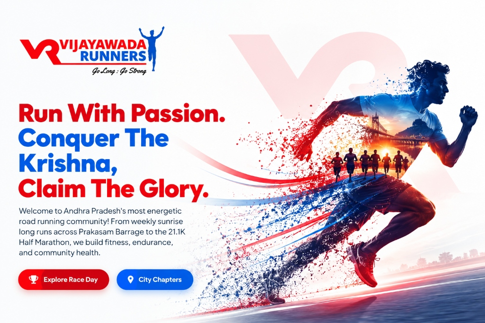
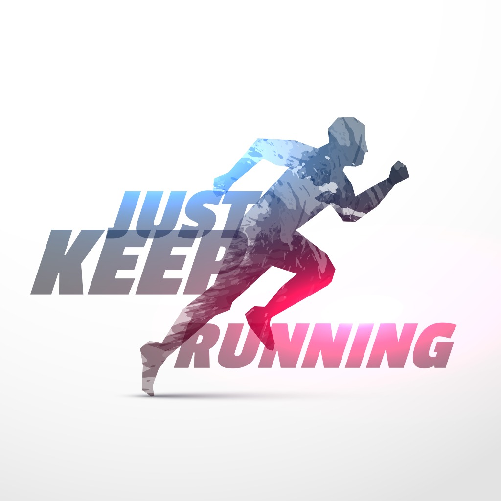

VIJAYAWADA MARATHON 2026
RUN THE CITY. FEEL THE MOMENT.
6 December 2026 · Sunday
|
5:00 AM IST
|
5 KM · 10 KM · 21 KM
A warm sunrise before Vijayawada wakes up. Experience Andhra Pradesh's premier road running celebration along the historic Krishna riverfront.
RACE DAY IN
00Days
:
00Hours
:
00Mins
:
00Secs
SCROLL TO START YOUR RUN ↓

10
10th Edition
2016 – 2026 Decade
5K · 10K · 21.1K
10TH EDITION LANDMARK
A DECADE OF RUNNING. ONE CITY IN MOTION.
In 2016, a small group of fifty passionate morning runners stepped onto Prakasam Barrage as the sun crested over the Krishna River. What began as a personal quest for fitness has grown into a landmark athletic movement that unites thousands of strides every December.
“TEN EDITIONS. COUNTLESS MILES. ONE COMMUNITY.”
— Vijayawada Runners Society
Every edition has welcomed beginners running their first 5 KM, seasoned pacers mentoring half-marathoners, and volunteers handing out water with unconditional cheer. We invite you to be part of this 10th milestone chapter.
Fifty sunrise fitness enthusiasts laced up on Prakasam Barrage. The first collective breath of a city choosing movement.
“One road, fifty hearts, and the sunrise over the Krishna.”
02
2017 · Finding Rhythm
[Verified story — official milestone data confirmed by organizers].
“From a morning routine to a city-wide conversation.”
03
2018 · Riverfront Growth
[Verified story — official milestone data confirmed by organizers].
“Spreading into college campuses and morning running circles.”
09
2025 · Prelude to the Milestone
Over 5,000 runners joined hands for the 9th edition, cementing Vijayawada on India's national running calendar.
“The river echoed with thousands of cheering families.”
10
2026 · The Landmark 10th Edition
6 December 2026. A decade of discipline, camaraderie and city pride. Your finish line awaits.
“RUN THE CITY. FEEL THE MOMENT.”
THREE DISTANCES · ONE FINISH LINE
CHOOSE YOUR RACE
One event. Three ways to finish stronger. Select the challenge tailored to your pace and aspirations.
5
EVERYONE · FUN RUN
5 KM
A welcoming distance for first-time participants, families and casual runners. Celebrate the spirit of morning fitness.
Flat, scenic sunrise river loop
Commemorative 10th edition medal & bib
Post-race refreshments & digital certificate
Open to all age groups and walkers
10
RUNNING ENTHUSIASTS · TIMED
10 KM
A stronger challenge for runners ready to push their pace and endurance. RFID electronic timing included.
Certified 10 KM timed road route
Electronic RFID bib timing with split metrics
Official technical race running tee & medal
On-route hydration every 2.5 KM & pacing flags
FLAGSHIP DISTANCE
21
HALF MARATHON · COMPETITIVE
21.1 KM
For runners ready to test endurance, discipline and race-day mindset. The ultimate Vijayawada road racing glory.
AIMS-calibrated course crossing Prakasam Barrage
Precision RFID chip timing & instant SMS results
Heavy 10th milestone finisher medal & runner tee
Electrolyte stations, medical aid & official pacers
SHARED EMOTION
RUNNING IS BETTER TOGETHER.
From the first kilometre to the final finish-line step, Vijayawada Marathon brings people together through movement, effort and shared celebration.
You don’t just run on roads; you run with colleagues, families, friends, and thousands of strangers who celebrate every single personal best with genuine warmth.
RACE DAY JOURNEY
THE MARATHON EXPERIENCE
From early morning dawn staging to the electric finish-line medal presentation, here is how race day unfolds.
01 / DAWN FLAG-OFF
THE CITY WAKES UP WITH YOU.
Thousands gather under the cool December dawn sky. Anticipation builds as national anthems play and countdown sirens echo across the staging arena.
21.1 KM HALF MARATHON: FLAG-OFF TIME — TO BE ANNOUNCED
10 KM TIMED RUN: FLAG-OFF TIME — TO BE ANNOUNCED
5 KM FUN RUN: FLAG-OFF TIME — TO BE ANNOUNCED
02 / RACE ROUTE
THE HISTORIC RIVERFRONT COURSE.
Experience wide arterial city avenues, scenic Krishna riverfront stretches, and gentle dawn breezes.
5 KM Family & Fun Loop
A flat, energetic loop designed for fun runners, walkers, and beginners.
Start / Finish: Arena [To Be Announced]
Scenic sunrise river view
2 Hydration & cheer stations
Elevation: Flat (+12m net)
Official Map Pending
Route imagery & GPX Plotaroute embed to be released upon police clearance.
10 KM Timed Endurance Course
A certified, fast course tailored for personal records and pacing groups.
Start / Finish: Arena [To Be Announced]
Split timing mats at 5 KM turnaround
4 Hydration & electrolyte stations
Elevation: Fast & Flat (+22m net)
Official Map Pending
Route imagery & GPX Plotaroute embed to be released upon police clearance.
21.1 KM Half Marathon Flagship Course
Our iconic course traversing historic bridges and riverfront avenues.
Start / Finish: Arena [To Be Announced]
Iconic Prakasam Barrage crossing
8 Hydration points + 2 Enerzal aid zones
4 Mobile medical ambulance patrols
Official Map Pending
Route imagery & GPX Plotaroute embed to be released upon police clearance.
03 / ON-ROUTE SUPPORT
HYDRATION & CONSTANT CARE.
Run with peace of mind. Every 2.5 kilometres features fresh water, electrolyte replenishment, fruit slices, and cheering volunteers who ensure you stay fueled.
Fast-grab water & electrolyte hydration cups
Mobile cycling physios & emergency paramedic teams
Marked relief zones and waste collection bins

04 / THE FINISH LINE
THE LAST STRIDE. THE BIGGEST SMILE.
As you turn into the final 200-meter finishing straight, hearing the announcer roar your bib number and crowds cheering on both sides, every hour of training becomes worth it.
05 / CELEBRATION ARENA
THE MEDAL, MEMORIES & MUSIC.
Receive the heavyweight 10th landmark commemorative medal around your neck. Enjoy a wholesome post-race Andhra breakfast, snap finisher portraits, and dance to the celebration stage beats.
“Every kilometre feels different when you know your community is running beside you.”
[Verified runner story — official community narrative confirmed by organizers].
[Verified Runner Name]
Half Marathon Finisher
“Running on Prakasam Barrage as the dawn breaks is an emotion only Vijayawada can give.”
[Verified runner story — official community narrative confirmed by organizers].
[Verified Runner Name]
10 KM Veteran Runner
“From a casual 5K jogger to completing my first half marathon, this group made me believe.”
[Verified runner story — official community narrative confirmed by organizers].
[Verified Runner Name]
5K to 21K Journey
COMMUNITY PATRONS
BUILT TOGETHER.
A great race is powered by great partners. We thank the civic bodies, healthcare institutions and corporate sponsors powering our 10th landmark edition.
OFFICIAL EVENT PARTNERS & SUPPORTERS
SUPPORTING CIVIC BODIES & PAST PATRONS
PARTNER WITH VIJAYAWADA'S LARGEST ATHLETIC MOVEMENT
Connect your brand with over 6,000 active runners, corporate leaders and civic change-makers across Andhra Pradesh.
HELP & INQUIRIES
FREQUENTLY ASKED QUESTIONS
Find instant clarity about registration, bib expo, categories and race day procedures.
Anyone with passion for movement! The 5 KM Fun Run is open to individuals of all ages and families. The 10 KM timed run is open for runners aged 14 and above, and the 21.1 KM Half Marathon is open for runners aged 18 and above.
If this is your first running event, the 5 KM Fun Run is welcoming and unhurried. If you jog consistently 3-4 days a week, the 10 KM is an exciting step forward. If you have trained over several months for endurance, test your discipline on the 21.1 KM Half Marathon.
Competitive distances (10 KM and 21.1 KM) are categorized into Open (18–44 years), Veteran (45–54 years), and Senior Veteran (55+ years) for both men and women.
The official starting arena is currently [TO BE ANNOUNCED]. The final municipal and police-approved venue map will be communicated to all registered runners well in advance of race week.
Runners should report by 5:00 AM IST. Event staging gates open at 4:00 AM to allow ample time for baggage deposit, dynamic warm-up drills, and corralling into starting holding pens.
Bib collection takes place during the official Marathon Expo on Friday & Saturday preceding race Sunday. Expo dates, venue, and timings will be announced via SMS and email. No bibs are distributed on race morning.
Registration includes an official 10th edition running tee, RFID timing chip bib (10K & 21K), on-route hydration and nutrition, medical support, heavy commemorative finisher medal, hot breakfast, and digital timing certificate.
Yes, clearly marked hydration points with fresh water, Enerzal electrolytes, sponge cooling, and citrus fruits are spaced every 2 to 2.5 kilometres along all official courses.
Comprehensive medical support is stationed along the route, with standby ambulances, emergency physicians, physios, and volunteer first-aiders ready to assist runners immediately.
The overview course is highlighted in the Routes section above. The official GPX Plotaroute map and turn-by-turn elevation profile will be published upon final municipal sign-off.
Runners must wear their assigned bib visibly on their chest. Following pacing bicycles, external vehicular pacing, or bib swapping is strictly prohibited. Official cut-off times are enforced for runner safety.
Cash prize money details for Top 3 podium finishers in the 21.1 KM and 10 KM categories are To Be Announced. Trophies and honor certificates are presented to winners across all competitive age tiers.
Open encompasses participants aged 18 through 44. Veteran covers 45 through 54 years. Senior Veteran recognizes outstanding master runners aged 55 years and above. Age is calculated based on government photo ID proof as of race day.
COMMUNITY IN MOTION
FOLLOW THE RUN
Race day begins long before the start line. Tag your morning training runs with #VijayawadaMarathon2026 and get featured.


FOLLOW THE RUN
Race day begins long before the start line. Tag your morning training runs with #VijayawadaMarathon2026 and get featured.
“5:00 AM on the barrage. Where tired legs meet relentless hearts. 60 days to race day!”
“That feeling when you see the arch in the distance and realize you made it.”
“Sunday long runs feel like five minutes when your squad has your back.”